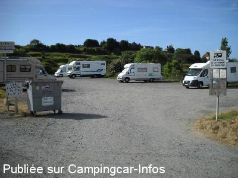

APN = Parking toléré jour/nuit de :
PORT EN BESSIN HUPPAIN
(N° 750)
Accès/adresse :
Rue du 11 Novembre
14520 PORT EN BESSIN HUPPAIN
14520 PORT EN BESSIN HUPPAIN
Latitude : (Nord) 49.3455° Décimaux ou 49° 20′ 43′′
Longitude : (Ouest) -0.75819° Décimaux ou 0° 45′ 29′′
Tarif : 2016
Stationnement : 4 €
Passage d'un agent pour encaisser
Services :
Tous commerces
Autres informations :
Ouvert toute l'année
15 emplacements
Tel : +33 (0)231 217 212
http://www.bayeux-tourism.com/

Le 11/06/2011 par mado 93
de
YvesObene
le 16/03/2016 :
Aire qui remplace l'aire du Super U qui est en travaux pour le moment. Bien que marquée payante, nous n'avons vu personne pour l'encaissement.
Aire qui remplace l'aire du Super U qui est en travaux pour le moment. Bien que marquée payante, nous n'avons vu personne pour l'encaissement.
de
mireille 37
le 14/09/2015 :
Avons réussi à trouver une place sur cette aire le 13 août 2015 pour maintenant 4,50 euros la nuit.
Terrain de boules juste à coté
Aire très agréable et bien placée pour aller au centre et au port
Avons réussi à trouver une place sur cette aire le 13 août 2015 pour maintenant 4,50 euros la nuit.
Terrain de boules juste à coté
Aire très agréable et bien placée pour aller au centre et au port
de
boulais
le 25/08/2014 :
merci à la municipalité pour cet aire pour le camping car. Une personne est venu venue encaisser les 3,50 € . Les campings cariste respectés cet aire ne vidés pas la nuit vos eaux sales, il y a un endroit au super U pour le faire.
merci à la municipalité pour cet aire pour le camping car. Une personne est venu venue encaisser les 3,50 € . Les campings cariste respectés cet aire ne vidés pas la nuit vos eaux sales, il y a un endroit au super U pour le faire.
de
grenier
le 16/09/2013 :
De passage le 10 et 11 09 2013, le tarif est toujours de 3.50€ avec une agréable personne passe pour encaisser. Aire très bien placée (port et centre ville à 5 mn à pied) et très calme. Par contre il n'y a aucun service disponible. pour cela il faut se rendre sur le parking de super U où on peut faire le plein pour 3€ ou bien au camping Portland à la sortie du village direction Colleville pour 5€.
De passage le 10 et 11 09 2013, le tarif est toujours de 3.50€ avec une agréable personne passe pour encaisser. Aire très bien placée (port et centre ville à 5 mn à pied) et très calme. Par contre il n'y a aucun service disponible. pour cela il faut se rendre sur le parking de super U où on peut faire le plein pour 3€ ou bien au camping Portland à la sortie du village direction Colleville pour 5€.
de
sybrub
le 21/05/2013 :
Nous y sommes restés la nuit du 17 au 18/05. Personne n'est venu encaissé les 3,50€ comme annoncé sur le panneau. il faut se rendre au super U pour les services.
De jolis villages en pierre (tour en bessin et autres) très agréables à découvrir sur la route de Port en bessin
Nous y sommes restés la nuit du 17 au 18/05. Personne n'est venu encaissé les 3,50€ comme annoncé sur le panneau. il faut se rendre au super U pour les services.
De jolis villages en pierre (tour en bessin et autres) très agréables à découvrir sur la route de Port en bessin
de
Alain et veronique
le 22/02/2013 :
§
Cette aire et à 5euros la muit calme près du centre ville
§
Cette aire et à 5euros la muit calme près du centre ville
de
bryan
le 30/05/2011 :
§
Bonjour à tous,
nous sommes arrivé sur ce petit parking municipal le 17/05/2011 vers 10h. Tranquille, 3€50 la nuit mais nous n'avons vu personne. Belles balades sur le port tout près avec commerces, cafés et restaurants. Tour de Vauban à voir! Office du tourisme tout près! Poissons frais tous les matins et plateaux de fruits de mer à commander la veille sur le port. Nuit tranquille.
§
Bonjour à tous,
nous sommes arrivé sur ce petit parking municipal le 17/05/2011 vers 10h. Tranquille, 3€50 la nuit mais nous n'avons vu personne. Belles balades sur le port tout près avec commerces, cafés et restaurants. Tour de Vauban à voir! Office du tourisme tout près! Poissons frais tous les matins et plateaux de fruits de mer à commander la veille sur le port. Nuit tranquille.
de
clotaire 72
le 20/11/2010 :
port en bessin huppain week end de mi-novembre 2010 tres chargé en c car sur cette ville mais la ville ouvre plein de parking pour la fete du gout du large
(fete de la coquille saint jacques)
vidange possible sur parking du super u + borne
merci a cette ville et aux élus de port en bessin
port en bessin huppain week end de mi-novembre 2010 tres chargé en c car sur cette ville mais la ville ouvre plein de parking pour la fete du gout du large
(fete de la coquille saint jacques)
vidange possible sur parking du super u + borne
merci a cette ville et aux élus de port en bessin
de
Rougui
le 04/05/2009 :
Passage au cours du week-end du 1° Mai. Beaucoup de monde, les places étaient chères (environ 25 CCars peuvent trouver place). Aire calme, située à deux pas du port. Aire de services proche : SAINTE HONORINE DES PERTES. A recommander.
Passage au cours du week-end du 1° Mai. Beaucoup de monde, les places étaient chères (environ 25 CCars peuvent trouver place). Aire calme, située à deux pas du port. Aire de services proche : SAINTE HONORINE DES PERTES. A recommander.
de
Jean-Pierre
le 31/03/2009 :
Deux jours sur cette aire de stationnement, calme, sans aucune commodité, idéale pour ceux qui commencent leurs vacances en nomade. L'éclairage n'est assuré que par la rue. Le prix est de 3,50€ mais l'office de tourisme nous a informé que personne ne passait encaisser. Nous n'avons vu personne. Peut être après le 1er avril ?
Point de vidange le plus proche : Bayeux, Arromanches.
Deux jours sur cette aire de stationnement, calme, sans aucune commodité, idéale pour ceux qui commencent leurs vacances en nomade. L'éclairage n'est assuré que par la rue. Le prix est de 3,50€ mais l'office de tourisme nous a informé que personne ne passait encaisser. Nous n'avons vu personne. Peut être après le 1er avril ?
Point de vidange le plus proche : Bayeux, Arromanches.
de
.charles guy
le 22/03/2008 :
Nous avons stationné sur la nouvelle aire. Cette aire d'une vingtaine de places est un simple parking empierré mais plat. Il n'y a aucun service. La nuitée est de 3,40€ (de 20 h à 9 h). Elle est située à 400 m du centre. Je pense que la mairie pourrait installer la vidange des eaux usées et l'eau à disposition. Dommage car la ville est agréable
Nous avons stationné sur la nouvelle aire. Cette aire d'une vingtaine de places est un simple parking empierré mais plat. Il n'y a aucun service. La nuitée est de 3,40€ (de 20 h à 9 h). Elle est située à 400 m du centre. Je pense que la mairie pourrait installer la vidange des eaux usées et l'eau à disposition. Dommage car la ville est agréable
de
Didier Legros
le 15/10/2007 :
L'aire n'existe plus c'est un chantier, donc la municipalité nous a créé une autre aire, du côté des HLM (après discussion avec les commerçants c'est la zone sensible de port). Résultat : plus de borne, pas de vidanges, terrain qui ressemble plus à un terrain vague plutot qu'à une aire.
Tout cela permet de constater que la municipalité ne désire plus de camping-cars. DOMMAGE !
L'aire n'existe plus c'est un chantier, donc la municipalité nous a créé une autre aire, du côté des HLM (après discussion avec les commerçants c'est la zone sensible de port). Résultat : plus de borne, pas de vidanges, terrain qui ressemble plus à un terrain vague plutot qu'à une aire.
Tout cela permet de constater que la municipalité ne désire plus de camping-cars. DOMMAGE !